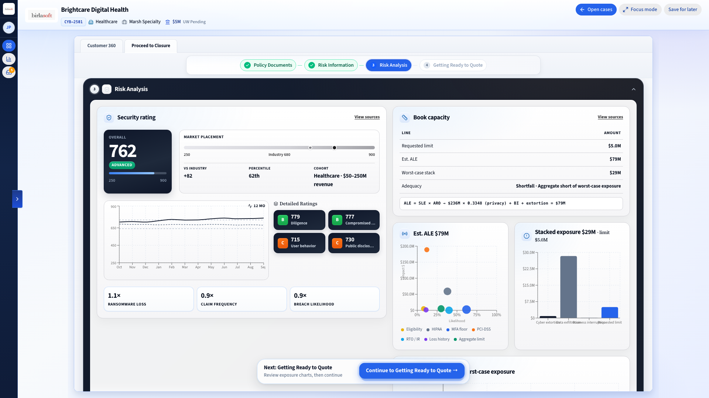
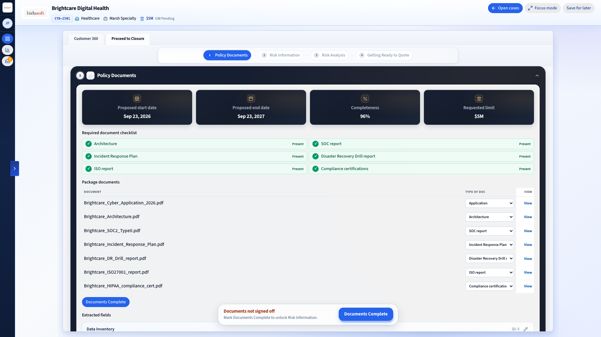
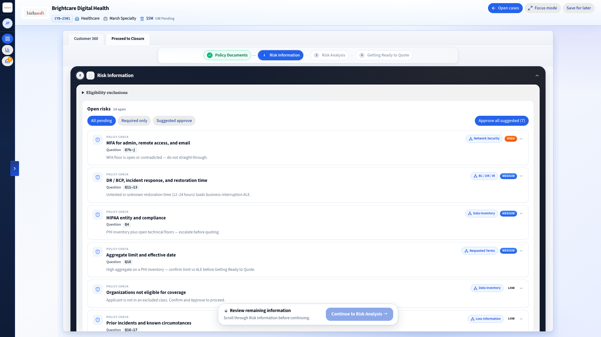
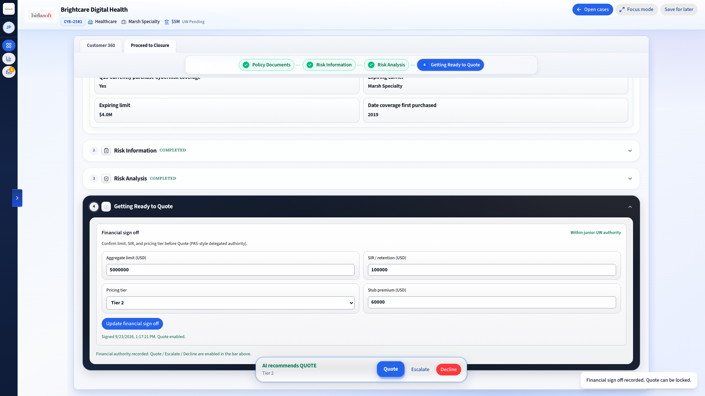
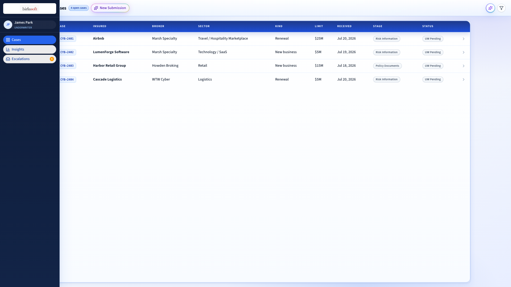
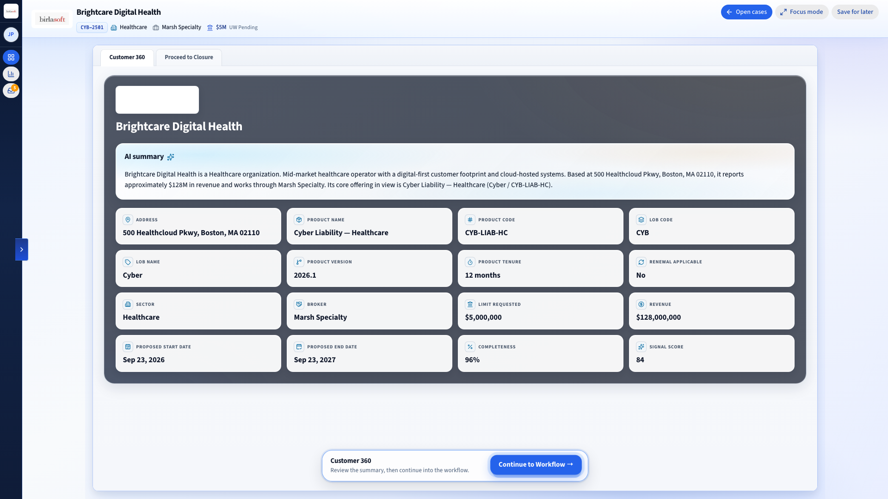

Claims vs reality
EDR and MFA stories checked before quote.

EDR and MFA stories checked before quote.
Why you quoted. What you overrode. What went to PAS.
From inbox noise to fields you can actually work.
Quote, refer, or decline with reasons you can change.
From inbox noise to fields you can actually work.
EDR and MFA stories checked before quote.
Quote, refer, or decline with reasons you can change.
Why you quoted. What you overrode. What went to PAS.
*Illustrative. Mid specialty desks often make the spend case when research drops by about half an hour to an hour a file and weak control claims get caught early. Not Birlasoft production stats. Marsh GIMI Q2 2026: global cyber rates down 4%, twelfth straight quarterly drop.
One file. Three moves. Not a chat window wearing underwriting clothes.
Email lands. Docs get typed. What’s missing shows up before someone retypes the whole application by hand.

They said MFA and backups. The scan says otherwise. You see the conflict, with the source, before anyone prices it.

Appetite on. Limit and SIR locked. Quote, refer, or decline. Then push the decision into your policy system with a trail you can defend.

Soft-market speed forces a new desk architecture — one that stages intake, gaps, appetite, and bind as a single system. Ratings and cat models stay partners. Your underwriters still own the paper.
You need Coalition-class turnaround. You do not need to become an insurer that also runs security products.
Conflict board. Appetite you can version. A written why. Chat polish is not the product.
MGA and carrier cyber desks racing on speed while keeping their panel and their book.
We sit between broker email and PAS. Ratings stay partners. No rip-and-replace speech.
Override logs and cite-back from the start. Useful when someone asks for the evidence pack later.


We’ll walk a cyber submission with you. Gaps, appetite, handoff. No slide theater.